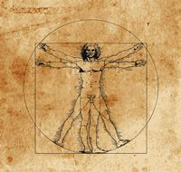

Je suis titulaire du Diplôme National du Brevêt, que j'ai obtenu au Lycée Français René Descartes de Kinshasa (R.D.C), en 2010.
3 ans plus Tard, en 2013, j'obtiens mon Baccalauréat Série littéraire, toujours dans le même établissement.
J'ai acquis de nombreuse expériences à travers les différents boulots que j'ai pu exercé.
Les deux plus récents :
Je suis connecté sur ces réseaux :
Je suis passionné de lecture, et d'écriture.
J'ai l'habitude de faire des petits montage audio/vidéo à partir de films que j'ai déjà vu, en dehors des mini vidéos que je peux créer pour des pages.
Je suis aussi passionné par la Cuisine, car j'aime manger de bon petits plats.
Des sports comme le Rugby, le Badminton, le Football et la Course à pieds figurent parmi mes activités physiques favorites à regarder et pratiquer.
J'aime tout autant le Cinéma, regarder des films, des documentaires ou des séries voir des mangas. les émissions faisant des analyses filmiques figurent parmi mes préférées.
En dernier viens peut être mon amour des voyages, car avec eux se manifestent de nombreuses expériences à la fois humaines et culturelles sans cesse enrichissantes.
l'Une de mes chansons préférées est "SAVE TONIGHT" de Eagle Eye Cherry
l'Humanité est mon héroïne :). En effet je n'ai aucun modèle de référence, or, l'être humain dans sa généralité se révèle être une personnalité pleine de ressource.
j'apprend de ce que je peux voir de meilleur chez un individu, que ce soit une femme, un homme, un enfant ou un adulte. Tant que ce que j'apprend auprès de ces gens me permet de m'améliorer et d'être un meilleur individu.
C'est déjà la fin, à présent vous en savez plus sur Mon Parcours, Mes expériences et mes goûts
N'hésitez pas à revenir quand vous voulez !
Vous savez ou me joindre ;)